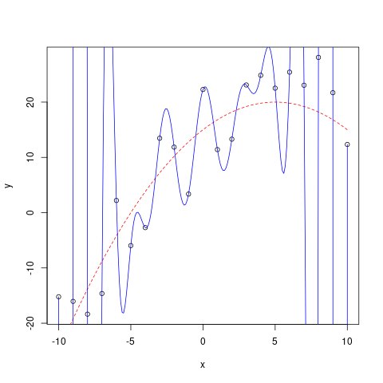
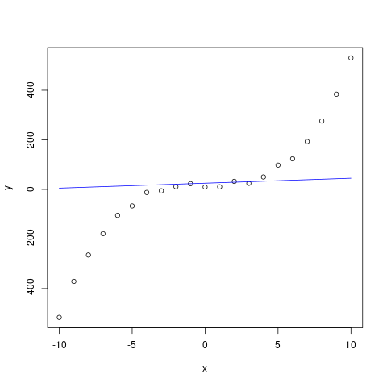
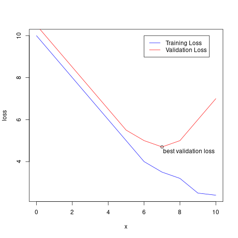
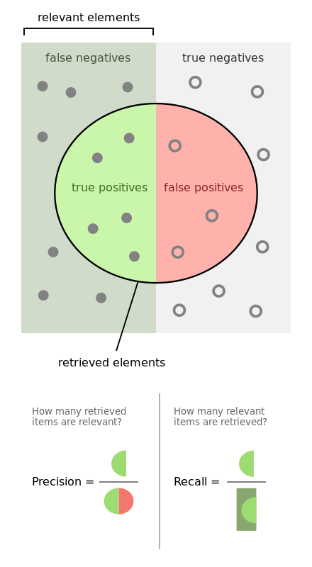
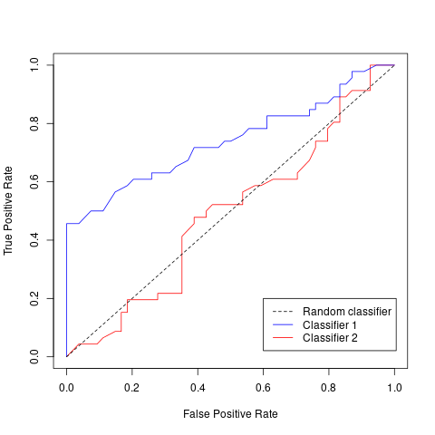
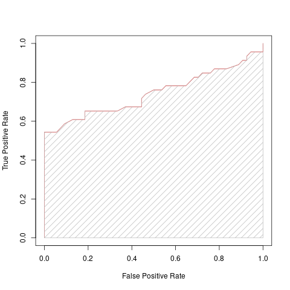
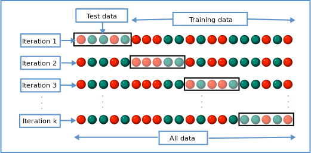

Machine Learning
Lecture 3 - Evaluating our Models
Model Performance
Train & Test
Why do we have different `sets' of data?
We've seen in the previous lecture how we can fit a linear regression model to a set of data, and we can measure the performance of this model.
But we do not understand how well this model works in the `real-world', how well it performs on data that has not yet been `seen', how well the model generalises to this unknown data.
So, when we want to create a machine learning model, we usually take our data, and split into two (sometimes three) sets of data. These different sets are named:
- training set,
- testing set,
- and (optionally) validation set.
Training Set
The training dataset, is the set of data, that we're allowing the model to `see' or learn from.
In our example of the linear regression, this is the set of data points to which we find the optimal parameters of our model.
It is not very useful to evaluate our model's performance with the training set as it doesn't tell us how well it's actually doing (we'll come back to this when we talk about over-/under-fitting).
Testing Set
The testing set is the set of data that we use to evaluate the generalisation of our machine learning model. The model is not allowed to use this set of data during training, but it is simply used for the evaluation of the model.
In general the testing set is between 10-30% of the overall available data, but this rule is not something dictated, and may vary depending on the amount of data available and the overall use case.
Once the 10-30% of the data has been sampled for the testing set, the rest of the data can be used for the training and validation sets.
Validation Set
If we have an iterative optimisation process (such as what we saw with gradient descent), we might want to know how well our model is possibly generalising to unseen data.
The validation dataset, is the set of data that we use to measure the generalisation of our model during the course of its learning process. Like the test set, this validation data should not be used to train the model, but only used to measure the model's generalisation during the lifetime of the learning process.
Over-/Underfitting
The ability of the model
When we created a linear regression model, we saw that it was not possible to predict the house price exactly, there was always some error that we could not overcome with the linear model.
If we have a model complicated model, such as polynomial regression (where we have polynomial terms in line equation), it may be possible to fit every training data point exactly. But is that what we want?.
In this section, we'll explore the concept of over- and under-fitting, and how we can use the testing set to understanding if these processes are happening.
Over-fitting
We'll begin with over-fitting. Over-fitting occurs when our model has a very high or perfect performance on the testing set, but does not perform well at all on the testing set.
There may be many reasons for this happening, such as the model being very complex, having too many variables.

Figure 1: Example of a well-fit model (red dashed) and a model that has overfitted to each data point (blue solid).
Under-fitting
Under-fitting, as the name suggests is what happens when we cannot fit the model to the data, it doesn't even perform well on the training data, the data the model is allowed to learn from. This can happen when the model is too simple and cannot learn the intrinsic relationship between the input and output. For example, trying to use a linear model to learn from data that is not linear by nature.

Figure 2: A linear model (blue line) is unable to properly capture the relationship of this polynomial and so will underfit the data.
Validation Curves
If we have an iterative learning process, we can use the training and validation datasets to measure whether our model is over-fitting, and stop training the model at an optimal point before it overfits.
To do this, at every iteration of the learning process, we evaluate the model's performance using both the training and validation datasets. If the performance on both datasets is decreasing we can infer that the model is learning something useful that helps with it's generalisation to unseen data.
However, if the performance on the training set is decreasing, while the performance on the validation dataset is no longer decreasing or indeed increasing, we know the model is over-fitting to the training data.

Figure 3: Example of training and validation loss as the model iteratively trains. Both the train and validation loss decreases, up until a point where the model begins overfitting. This overfitting begins to occur when the training loss continues to decrease but the validation loss either stops decreasing or increases. Ideally, we would use the model parameters from the model with the lowest validation loss.
Bias/Variance Tradeoff
The Bias/Variance tradeoff is a property of machine learning models. It describes a model's expected generalisation abilities based upon how the parameters are estimated across a dataset.
- Bias - the model's `flexibility' to represent the true relationship in the data. Model's with low bias have a tendency to underfit. An example would be a linear model model trying to fit against non-linear function.
- Variance - the impact that a single sample in the data has on the model. Model's with high variance tend to overfit to the training data.
Regression
Metrics
Now that we've looked at the various sets of data, and the potential scenarios when we fit a model, we'll now want to look at some actual methods of evaluating our model.
These we call metrics. Metrics are values that help us understand how well a model might perform in the real world. Metrics are helpful to explain the predictive power of a model with one value.
There are many different types of metrics that can be used depending on the class of problem that is being dealt with. For instance, there are different set of metrics for Regression and classification problems.
We'll first look at some metrics we can use to evaluate a regression model (some of which we've already seen in the Linear models lecture), and then we'll have a look at metrics for a classification task.
Mean Squared Error (MSE)
A mean squared error (sometimes called the sum of squared residuals) is the measure of mean magnitude between two sets of points \(y, \overline{y}\).
The formula for MSE is:
\(\text{MSE} = \frac{1}{N} \sum_i^N (y_i, \overline{y_i})^2\)
for \(N\) points.
MSE is always non-negative, and the lower the MSE the better.
Root Mean Squared Error (RMSE)
\[ \text{RMSE} = \sqrt{\text{MSE}} \]
Due to the squared error term, larger errors have a large effect on the outcome of the equation, so both RMSE and MSE is sensitive to outliers.
MSE's error is measured in squared units, while RMSE is measured in the same unit as the target.
Mean Absolute Error (MAE)
Mean absolute error or MAE is one objective function for measure the \(L_1\) between two sets of points.
\(\text{MAE} = \frac{1}{N} \sum_i^N | y_i - \overline{y_i} |\)
for \(N\) of points.
Like MSE, RMSE, the lower the MAE value, the better the fit on the statistical model.
Classification
Binary classification & labelling as positive or negative
We now move onto some of the more typical classification metrics. But first, we must first understand when our classifier predicts positive or negative in a binary classification task.
Let's say we have a binary classifier \(\mathcal{M}\) which predicts the positive class if the predicted probability is \(\geq 0.5\). I.e.:
\[ L(x) = \begin{cases} 1 & \text{if}, \; \mathcal{M}(x) \geq 0.5 \\ 0 & \text{otherwise} \end{cases} \]
where \(L\) is our labelling function.
Here 0.5 is the threshold for predicting the positive class.
TP/TN/FP/FN
Before we look at other metrics to evaluate our classification metrics, I first want to describe these acronyms.
- List B_column BMCOL
- TP - True-Positive – our model has predicted positive (it was correct) and the actual label is positive.
- TN - True-Negative – our model has predicted negative (it was correct) and the actual label is negative.
- FP - False-Positive – our model has predicted positive (it was wrong) the actual label was negative.
- FN - False-Negative – our model has predicted negative (it was wrong) the actual label was positive.
- Diagram B_column BMCOL

Figure 4: By Walber - Own work, CC BY-SA 4.0, https://commons.wikimedia.org/w/index.php?curid=36926283
Accuracy
In a binary classification task, accuracy is measured using:
\[ \text{Accuracy} = \frac{TP+TN}{TP+TN+FP+FN} \]
or multi-classification:
\[ \text{Accuracy} = \frac{\text{number of correct}}{\text{number of samples}} \]
The range of accuracy is in \([0, 1]\), the higher the value of accuracy the better. Accuracy is often presented in the form of a percentage i.e. \(100 \cdot \text{Accuracy}\)
Precision
Measuring the precision tells us how many how accurate our model was in predicting positive cases. Here we have \(TP\) or the number of True-Positive, divided by \(TP + FP\) where \(FP\) is the number of False-Positive cases.
\[ \frac{TP}{TP + FP} \]
Valid values for the precision metric are in the range \([0, 1]\) where the higher the value the better.
Recall
Recall tells us: out of all the positive cases, how many of them were actually found/predicted to be positive. How many of these positive cases was our model able to recall?
\[ \frac{TP}{TP+FN} \]
Like precision, recall is in the range \([0, 1]\) where the higher the value the better the recall.
Confusion Matrix
A confusion matrix is a visual representation of these different type of predictive cases (TP/TN/FP/FN).
An optimal confusion matrix, is a diagonal matrix (all entries outside of the diagonal are zero). Here is one example of a confusion matrix.
| Predicted | |||
| Positive | Negative | ||
| Actual | Positive | 5 | 2 |
| Negative | 3 | 1 |
\(F_\beta\) & \(F_1\)
With the precision/recall metrics, it is trivial to optimise for one over the over:
- We can achieve perfect precision (\(\text{precision} = 1\)) by predicting everything is negative (no false positives)
- We can achieve perfect recall (\(\text{recall} = 1\)) by predicting that everything is positive (no false negatives).
But predicting everything is negative, or everything is positive is not really a useful model. So we have another metric that is the harmonic combination of precision and recall: \(F_1\) and \(F_\beta\) score.
\[ F_\beta = (1 + \beta^2) \frac{p \cdot r}{\beta^2 p + r} \]
where \(p, r\) is the precision and recall metric respectively. For the \(F_1\) score, we simple set \(\beta = 1\).
Receiver Operating Characteristic (ROC)
In the previous slides, we have labelled our samples as positive if our classifier predicts \(\geq 0.5\), else it is labelled as negative. This \(0.5\) is our threshold for our labelling function. But we can vary this threshold if we want. Lowering the threshold will typically mean our classifier labels positive cases more often. While increasing the threshold makes the classifier more conservative, and typically predicts labels positive cases less often.
If we vary this threshold from 0 to 1 and calculate the true- and false-positive rate, we can visualise something we call the Receiver Operating Characteristic or ROC for short.

This ROC curve, with the dotted line directly in the centre, first shows us what a random classifier would look like. This random classifier randomly predicts positive or negative for any case.
We can say that our classifier is better than random, if the line is to the top-left of the random classifier. In general, the more to the top-left the line is, the better.
Area Under Curve (AUC)
We've just seen how the ROC curve can visually point to which model is better than others, and which threshold we may want to choose for our labelling function. However, we can also turn these types of curves in a number, a metric.
This next metric we're going to look at does just that. The Area Under Curve or AUC for short, takes our ROC curve, and measures the area underneath the curve, giving us a single value for each model that we can use for comparison.

One method to calculate this area is to use the trapezoid rule to approximate the region underneath the graph of a function:
\[ \text{Area} = 0.5 \frac{1}{N} \times \left[ \text{TP}_1 + 2 (\text{TP}_2 + ... + \text{TP}_{N-1}) + \text{TP}_N \right] \]
If the AUC is close to one we know that the model at any threshold has very good discriminatory power.
Choosing the best model
Cross Validation using K-fold
We have seen why having a separate set of data for training, testing, and validation is necessary – to give some indication as to the generalisation performance of our model, and to track possible over-fitting.
To create these separate sets of data, we may have just sampled randomly or using a stratified method (more on this in a few slides). However, this is only one test of the model's generalisation abilities.
Cross-validation is a statistical method to test the model on many resamplings on the test set.

Figure 5: K-fold cross-validation (By Gufosowa - Own work, CC BY-SA 4.0, https://commons.wikimedia.org/w/index.php?curid=82298768)
Cross-validation works selecting a subset of the data for testing (leaving the rest for training), training the model, and then calculating the performance on this test set. Next, sample a different subset of data for a new testing set, training the model, and calculating the performance. Repeat this process until all data has been sampled for the testing set, and calculate the mean and standard deviation of model performance.
K-fold cross-validation is this method where \(k\) is the number of iterations it will take to have used the entire available data for testing. I.e., if you're performing 5-fold cross-validation, you would have trained and tested your model 5 different types, on 5 different samples from your available data.
Random & Stratified Sampling
When sampling data for our training and testing set, we could use two different methods:
- Random
- Stratified
To perform stratified sampling, we first split the dataset into stratas or distinct groups. For a classification problem, this could be splitting samplings by their respective class labels. Then, after splitting the data into their respective groups, we randomly sample from each group.
Let's say we have 150 samples, where:
- 40 samples are in group 1,
- 25 samples are in group 2,
- 85 samples are in group 3.
And we want to sample from this dataset for our test set using stratified sampling. First, we calculate the proportion of each group in the overall data:
- \(100 \times \frac{40}{150} = 26.\overline{6}\; \%\),
- \(100 \times \frac{25}{150} = 16.\overline{6}\; \%\),
- \(100 \times \frac{85}{150} = 56.\overline{6} \; \%\).
Therefore, in our testing set, \(26.\overline{6} \; \%\) of the data should be randomly sampled from group 1, and so on for all groups.
So if we want to use \(10 \; \%\) of our data for testing, that means we would have 15 samples in our dataset (\(\frac{150}{10}\)) sampled using:
- group 1: \(40 \times (\frac{15}{150}) = 4\) samples,
- group 2: \(25\times (\frac{15}{150}) = 2.5\) samples,
- group 3: \(85 \times ( \frac{15}{150}) = 8.5\) samples.
The proportion of samples in our test set from each group should roughly match the proportion of the overall available data. We can verify this by calculating the proportion of each group's representation, i.e. : \(100 \times \frac{4}{15} = 26.\overline{6} \; \%\) and we see that it matches the proportion of the overall data.
Stratified sampling is especially useful when we have a class-imbalance, and randomly sampling data could potentially lead to a situation where our test or training set only has one class label.
Summary
Summary
In this lecture we have discussed the following things:
- The idea behind having different subsets of data dedicated to training, testing, and validation.
- Different metrics that are used to evaluation regression and classification models.
- Various methods to sample data using cross-validation, random, or stratified sampling.